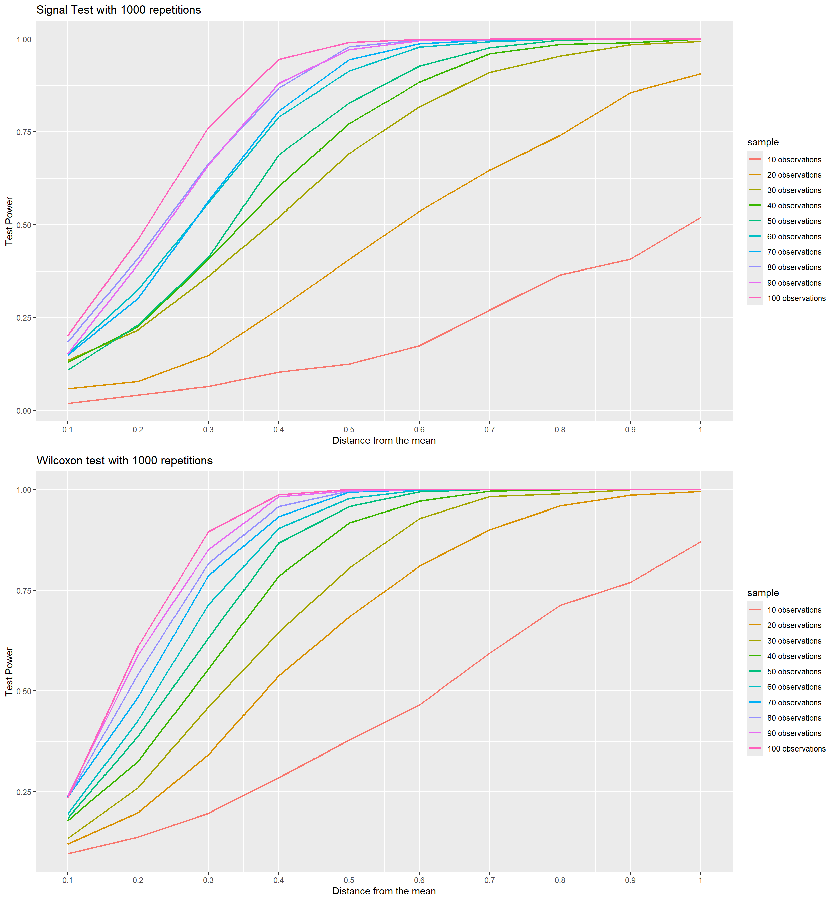

Before starting the simulation, we will generate two paired samples that follow the normal distribution, x and y, where the mean \(\mu\) of y is algebraically related to the value of x. \[ X \sim N(0, 1)\ \\ \ Y \sim N(x + d, 1),\ d = 0.1,\ 0.2,\ ...,\ 1 \] In this simulation we will test the power of the tests to detect whether samples have a relationship, and to do this we will simulate values where detection is more difficult and easier by varying the \(d\) of \(Y\) and the \(n\) for the \(rnorm\) function. The larger \(d\) and \(n\), the easier to detect. \(1000\) repetitions were performed for each combination of \(d\) and \(n\).
For the sign test, a difference was designated between \(X\) and \(Y\), and through this it was dichotomized between negative and positive to adjust the numerical values of the test support. For the Wilcoxon, it was enough to apply the test with \(X\) and \(Y\).
reinforcing that the following code is not focused on performance. This file also serves to show how it is possible to create data.frame objects with different names according to the for loop.
library(data.table)
library(ggplot2)
library(gridExtra)
library(reshape2)##
## Attaching package: 'reshape2'## The following objects are masked from 'package:data.table':
##
## dcast, meltset.seed(0)
for(n in seq(10L, 100L, 10L)){
for(d in seq(0.1, 1, 0.1)){
soma_rej_bin <- 0L
soma_rej_wc <- 0L
for(num in 1L:1000L){
x <- rnorm(n, 0, 1)
y <- rnorm(n, x + d, 1)
dif <- ifelse((x - y) < 0, 1L, 0L)
neg <- sum(fcase(dif == 1L, 1L), na.rm = T)
pos <- sum(fcase(dif == 0L, 1L), na.rm = T)
teste_bin <- binom.test(x = c(neg, pos), p = 0.5, alternative = "two.sided")
soma_rej_bin <- soma_rej_bin + ifelse(teste_bin$p.value < 0.1, 1L, 0L)
teste_wc <- wilcox.test(x, y, paired = TRUE, exact = TRUE, alternative = "two.sided")
soma_rej_wc <- soma_rej_wc + ifelse(teste_wc$p.value < 0.1, 1L, 0L)
}
eval(parse(text = paste0(
"bin_valores_n", n, "_d", d, " <- c()", " ; ", "wc_valores_n", n, "_d", d, " <- c()", " ; ",
"bin_valores_n", n, "_d", d, " <- c(bin_valores_n", n, "_d", d, ", soma_rej_bin/1000)", " ; ",
"wc_valores_n", n, "_d", d, " <- c(wc_valores_n", n, "_d", d, ", soma_rej_wc/1000)"
)))
}
}
for(n in seq(10L, 100L, 10L)){
eval(parse(text = paste0(
"wc_valores_n", n, " <- c() ; ", "bin_valores_n", n, " <- c() ; "
)))
for(d in seq(0.1, 1, 0.1)){
eval(parse(text = paste0(
"wc_valores_n", n, " <- c(wc_valores_n", n, ", wc_valores_n", n, "_d", d, ") ; ",
"bin_valores_n", n, " <- c(bin_valores_n", n, ", bin_valores_n", n, "_d", d, ")"
)))
}
}
dados_bin <- data.table(
bin_valores_n10, bin_valores_n20, bin_valores_n30, bin_valores_n40, bin_valores_n50,
bin_valores_n60, bin_valores_n70, bin_valores_n80, bin_valores_n90, bin_valores_n100)
names(dados_bin) <- c(
"10 observations", "20 observations", "30 observations", "40 observations", "50 observations",
"60 observations", "70 observations", "80 observations", "90 observations", "100 observations")
dados_bin[, d := seq(0.1, 1, 0.1)]
dados_wc <- data.table(
wc_valores_n10, wc_valores_n20, wc_valores_n30, wc_valores_n40, wc_valores_n50,
wc_valores_n60, wc_valores_n70, wc_valores_n80, wc_valores_n90, wc_valores_n100)
names(dados_wc) <- c(
"10 observations", "20 observations", "30 observations", "40 observations", "50 observations",
"60 observations", "70 observations", "80 observations", "90 observations", "100 observations")
dados_wc[, d := seq(0.1, 1, 0.1)]
#Generating the graphs
grafico_bin <- melt(dados_bin , id.vars = 'd', variable.name = 'sample')
grafico_wc <- melt(dados_wc , id.vars = 'd', variable.name = 'sample')
plot_bin <- ggplot(grafico_bin, aes(d, value)) +
geom_line(aes(colour = sample), size = .8) +
ggtitle("Signal Test with 1000 repetitions") + xlab("Distance from the mean") + ylab("Test Power") +
scale_x_continuous(breaks = seq(0.1, 1, 0.1),
labels = c("0.1", "0.2", "0.3", "0.4", "0.5", "0.6", "0.7", "0.8", "0.9", "1"))
plot_wc <- ggplot(grafico_wc, aes(d, value)) +
geom_line(aes(colour = sample), size = .8) +
ggtitle("Wilcoxon test with 1000 repetitions") + xlab("Distance from the mean") + ylab("Test Power") +
scale_x_continuous(breaks = seq(0.1, 1, 0.1),
labels = c("0.1", "0.2", "0.3", "0.4", "0.5", "0.6", "0.7", "0.8", "0.9", "1"))grid.arrange(plot_bin, plot_wc)
Observing the graphs we notice that the convergence curve of the test power for the value \(1\) for the Wilcoxon happens earlier than that of the Sign test, in both tests we see a weak power of the test for samples with \(n = 10\) and \(n = 20\), however for the Wilcoxon the sample of \(n = 20\) follows values very close to the sample of \(n = 30\) of the sign test. It is also noted that for the Sign test, from the distance \(0.8\) the power of the test for \(n \geq 40\) has already converged to \(1\) almost completely, whereas in the Wilcoxon test this convergence already happens with the distance \(0.6\), showing that he is superior in every way.